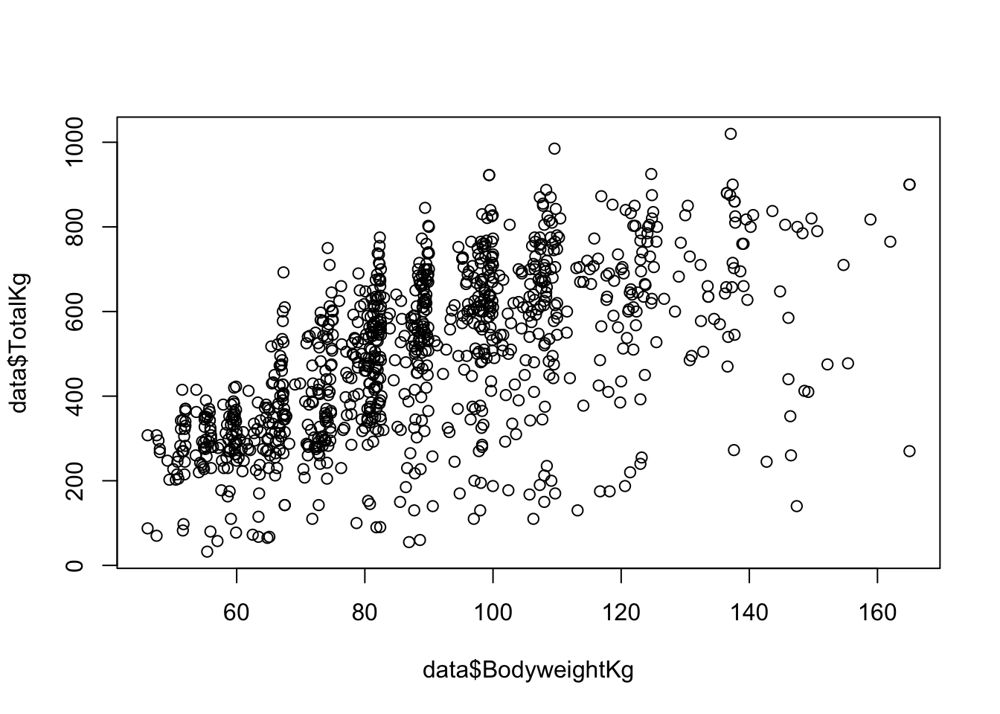

7 Simple Regression
In this chapter we’ll use the
lm()function for fitting a simple regression model with one continuous predictor, which will take the following forms:
\[y_i=\beta_0+\beta_1\left(X1\right)+\epsilon_i\] \[y_i=\beta_0+\beta_1\left(X1-\overline{X1}\right)+\epsilon_i\]
The top equation is an untransformed model, and the bottom is a mean-centered model.
The code in this chapter only works if you’re following along with the Github folder for this book (which you can download here), you’ve correctly set your working directory to the data folder (which you can learn how to do in Chapter 4), and run the code in the order it appears in this chapter.
The data used in this chapter is from Kaggle: https://www.kaggle.com/open-powerlifting/powerlifting-database. This dataset is a snapshot of the OpenPowerlifting database as of April 2019.
Importing
The first step is importing the data. In this example we’ll use the powerlifting.csv file in the data folder, which is a dataset that consists of competitors and their statistics at a Powerlifting competition:
Viewing
You can use the str() and head() functions to get the overall “impression” of the dataset.
'data.frame': 1000 obs. of 15 variables:
$ X : int 1 2 3 4 5 6 7 8 9 10 ...
$ Name : chr "Abbie Murphy" "Abbie Tuong" "Ainslee Hooper" "Amy Moldenhauer" ...
$ Sex : chr "F" "F" "F" "F" ...
$ Event : chr "SBD" "SBD" "B" "SBD" ...
$ Equipment : chr "Wraps" "Wraps" "Raw" "Wraps" ...
$ Age : num 29 29 40 23 45 37 23 35 36 37 ...
$ AgeClass : chr "24-34" "24-34" "40-44" "20-23" ...
$ Division : chr "F-OR" "F-OR" "F-OR" "F-OR" ...
$ BodyweightKg : num 59.8 58.5 55.4 60 104 74 59.8 80.4 108 74.8 ...
$ WeightClassKg : chr "60" "60" "56" "60" ...
$ Best3SquatKg : num 105 120 NA 105 140 ...
$ Best3BenchKg : num 55 67.5 32.5 72.5 80 82.5 70 77.5 100 95 ...
$ Best3DeadliftKg: num 130 145 NA 132 170 ...
$ TotalKg : num 290 332.5 32.5 310 390 ...
$ Place : chr "4" "2" "1" "3" ...The str() function provides a lot of good information. We now know that the dataset was correctly imported as a data frame which consists of 1000 observations of 27 variables, and we know the column names and column variable types. Additionally, the first few observations for each column is printed. But if you’d rather look at the dataset in a more standard format, you can use the head() function to see the first few observations:
head(data[1:9])
# Only the first 9 columns are printed here to save space
# By default, the first 6 observations of all columns are printed X Name Sex Event Equipment Age AgeClass Division BodyweightKg
1 1 Abbie Murphy F SBD Wraps 29 24-34 F-OR 59.8
2 2 Abbie Tuong F SBD Wraps 29 24-34 F-OR 58.5
3 3 Ainslee Hooper F B Raw 40 40-44 F-OR 55.4
4 4 Amy Moldenhauer F SBD Wraps 23 20-23 F-OR 60.0
5 5 Andrea Rowan F SBD Wraps 45 45-49 F-OR 104.0
6 6 April Alvarez F SBD Wraps 37 35-39 F-OR 74.0Let’s hypothesize that competitors who weigh more will have a higher TotalKg, which is the sum of the competitor’s most weight lifted on three lifts: Squat, Bench Press, and Deadlift. First, let’s visualize the relationship between these variables.

It looks like data points are concentrated more heavily at specific body weights. This is likely because powerlifters compete in weight classes, and its advantageous to be as close as possible to the cutoff weight limit.
We can use the hist() function to visualize the distributions of each variable:
The code
par(mfrow = c(1,2))above is used to print the plots as a 1 x 2 grid; theplot()function does not need to be used in conjuction with this piece of code.
And you can look at the six number summary with the summary() function. Notice how the summary conveniently includes the NA count.
TotalKg BodyweightKg
Min. : 32.5 Min. : 46.10
1st Qu.: 341.9 1st Qu.: 72.80
Median : 508.8 Median : 87.90
Mean : 496.7 Mean : 89.45
3rd Qu.: 643.1 3rd Qu.:104.50
Max. :1020.0 Max. :165.00
NA's :32 More examples of viewing data can be found in Chapter 5
Formatting
Before modeling, we need to ask ourselves a few questions. What if someone didn’t perform one of the lifts? Powerlifting competitions have several event options, and we might be including in our analysis individuals who have a TotalKg value, but their value is only for the squat and bench press lifts, rather than all three. Also, what if a competitor didn’t successfully complete a lift? That is, they competed in all three lifts, but they (likely) attempted to lift too much weight and their attempts were unsuccessful so they were disqualified. It probably isn’t a good idea to include either of these scenarios in our analysis because their TotalKg values wouldn’t represent the summation of all three lifts, which is what we’re interested in. We could use the filter() function from the tidyverse package to filter the data and take care of both of these issues in one step. Make sure the tidyverse package is loaded before running this code:
# Replace the original data object with the filtered data
data <- filter(data, Event == "SBD", Place != "DQ")In the code block above, the data was filtered to include only competitors who competed in all three lifts, SBD, and they were not disqualified, DQ, meaning that they had at least one successful lift on all three lifts. This ensures that the TotalKg value is representing the same value for all competitors.
More examples of formatting data can be found in Chapter 6
Modeling
The lm() Function
lm(formula, data, subset, weights, na.action,
method = "qr", model = TRUE, x = FALSE, y = FALSE, qr = TRUE,
singular.ok = TRUE, contrasts = NULL, offset, ...)The lm() (linear model) function is used for fitting linear models. There are many arguments for this function, but the formula and dataarguments are the only ones that need to be specified. If you’d like to learn more about functions and arguments, Chapter 2 covers basic programming concepts, including functions and arguments.
We’ll use the lm() function to make two models: the untransformed linear model and a mean-centered model.
Untransformed Model
When using the lm() function, the formula argument is set equal to the dependent variable, followed by a tilde, ~, and then the independent variable(s). The data argument is set equal to the object that contains the dataset, which in this example is the object called data.
Call:
lm(formula = TotalKg ~ BodyweightKg, data = data)
Coefficients:
(Intercept) BodyweightKg
50.83 5.24 The function prints out the slope and intercept for the model. We could then use the slope and intercept to create a plot with an abline:
It looks like there may be a significant relationship between the two variables, but how can we be sure? The lm() function printed the coefficients but did not provide information about the R-squared or significance. To see this information, we need to save the model as an object, and then print the summary of the model:
Call:
lm(formula = TotalKg ~ BodyweightKg, data = data)
Residuals:
Min 1Q Median 3Q Max
-553.63 -85.05 0.87 91.00 359.82
Coefficients:
Estimate Std. Error t value Pr(>|t|)
(Intercept) 50.8344 16.7228 3.04 0.00243 **
BodyweightKg 5.2404 0.1815 28.88 < 2e-16 ***
---
Signif. codes: 0 '***' 0.001 '**' 0.01 '*' 0.05 '.' 0.1 ' ' 1
Residual standard error: 127.7 on 910 degrees of freedom
Multiple R-squared: 0.4782, Adjusted R-squared: 0.4776
F-statistic: 834 on 1 and 910 DF, p-value: < 2.2e-16Now we have a nice summary print-out which includes the F-statistic, Residuals, R-squared, p-value, and more. What’s also nice is we can now use the plot function on the my_model object that we just created to view Residuals vs Fitted, Normal Q-Q, Scale-Location and Residuals vs Leverage plots.

The code
par(mfrow = c(2,2))above is used to print the plots as a 2 x 2 grid; theplot()function does not need to be used in conjuction with this piece of code.
What else can be done with the my_model object? Let’s take a look at the object’s attributes:
$names
[1] "coefficients" "residuals" "effects" "rank"
[5] "fitted.values" "assign" "qr" "df.residual"
[9] "xlevels" "call" "terms" "model"
$class
[1] "lm"The model’s attributes can be accessed by using a dollar sign, $. For example, here’s a printout of the first 5 residuals of the model:
1 2 3 4 5
-74.20773 -24.89527 -55.25580 -205.83149 -68.62079 Mean-Centered Model
In this example we’ll use the same variables as before, but this time the predictor variable will be mean-centered. First, we create a column that consists of the BodyweightKg mean, which is 89.17. Since there are 1000 rows in the powerlifting dataset, that means we are creating a column that has the value 89.17 repeated 1000 times. This value is then saved into the column BodyweightKg_mean; that’s what the first line of code in the code chunk below is doing. In the second line of code, each BodyweightKg value is subtracted from the BodyweightKg_mean mean column, which is then stored in a new column called BodyweightKg_mc.
# Create a column that consists of the mean BodyweightKg
data$BodyweightKg_mean <- mean(data$BodyweightKg, na.rm = TRUE)
# Subtract BodyweightKg from mean BodyweightKg column
data$BodyweightKg_mc <- data$BodyweightKg - data$BodyweightKg_meanHere’s what the new mean-centered column looks like graphically:
plot(data$BodyweightKg_mc ,data$TotalKg)
abline(lm(data$TotalKg ~ data$BodyweightKg_mc), col = "red")We can now use this mean-centered column as the dependent variable in the lm() function.
Call:
lm(formula = TotalKg ~ BodyweightKg_mc, data = data)
Residuals:
Min 1Q Median 3Q Max
-553.63 -85.05 0.87 91.00 359.82
Coefficients:
Estimate Std. Error t value Pr(>|t|)
(Intercept) 518.0954 4.2279 122.54 <2e-16 ***
BodyweightKg_mc 5.2404 0.1815 28.88 <2e-16 ***
---
Signif. codes: 0 '***' 0.001 '**' 0.01 '*' 0.05 '.' 0.1 ' ' 1
Residual standard error: 127.7 on 910 degrees of freedom
Multiple R-squared: 0.4782, Adjusted R-squared: 0.4776
F-statistic: 834 on 1 and 910 DF, p-value: < 2.2e-16The slopes are the same in both models, but in the mean-centered model the y-intercept is now the average TotalKg.